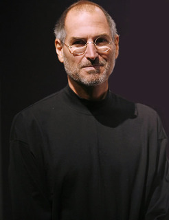
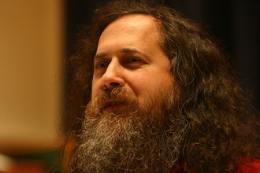
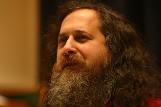
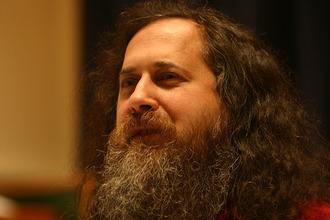

 


Projekt GNU
Richard Stallman
Poczuj potęgę wolności - zasady GNU
- Wolność uruchamiania programu, w dowolnym celu.
- Wolność analizowania działania programu, oraz dostosowywania go do własnych potrzeb, gdzie warunkiem koniecznym jest dostęp do kodu źródłowego.
- Wolność rozpowszechniania kopii programu.
- Wolność udoskonalania programu i publicznego rozpowszechniania własnych ulepszeń.
GCC (gcc, g++)
Gnu/Binutils
- ld
- nm
- objdump